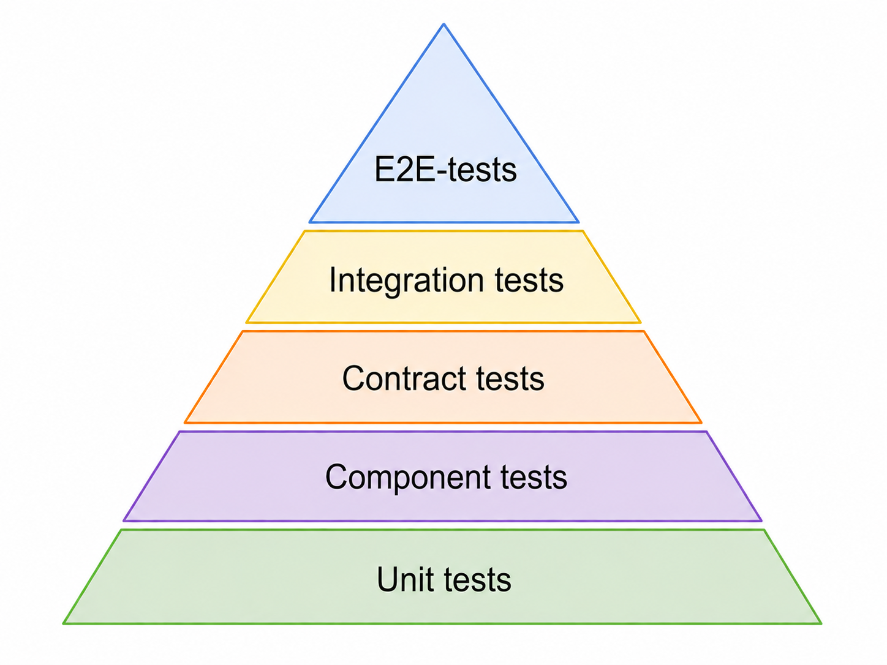
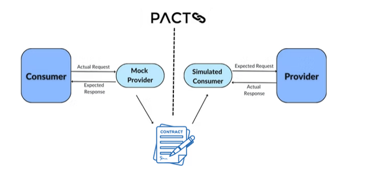

Consumer-Driven Contract Testing with Pact
In practice, Consumer-Driven Contract Testing (CDCT) works by defining a contract for each interaction between two microservices. A typical interaction is an API call where one service (the consumer) requests data from another service (the provider).
The contract is defined by the consumer. It describes how the consumer expects the provider’s API to behave, including the structure of requests and the expected responses. This contract reflects the actual needs of the consumer rather than a general API specification.
Once defined, the contract is shared with the provider. This can be done in different ways, for example through shared files, version control, or other forms of communication between teams. The provider then verifies the contract by testing whether its implementation satisfies the expectations described by the consumer.
For each interaction between a consumer and a provider, there is therefore a contract that defines the expected behaviour. If either the consumer or the provider changes in a way that breaks this contract, the verification will fail. This allows teams to detect compatibility issues early without relying on full end-to-end testing.
Purpose
The purpose is to verify microservice compatibility without running the full system like we do with integration- and E2E-tests.

In the test pyramid, Consumer-Driven Contract Testing is typically positioned below integration, component tests, and end-to-end tests. Unit tests verify individual classes or functions in isolation, while integration tests verify that multiple components or systems can work together correctly. Component or service tests validate the behavior of an entire service in isolation from the rest of the system. Contract tests focus specifically on the communication boundary between services by verifying that requests and responses match the agreed contract. Because contract tests avoid running the full distributed system, they are generally faster, more stable, and easier to maintain than end-to-end tests, while still providing confidence that services remain compatible.
The Pact framework
Pact is an open source, code-first solution with support for a wide array of programming languages. Tests are written in the same language as the application code and typically follow a behavior-driven testing style, similar to frameworks such as Gherkin. A contract is automatically created from the Consumer tests and are encoded in a JSON format, meaning it can be used by a Provider written in any language.
Pact supports HTTP and asynchronous message systems. Notably, this omits RPC systems.
Pact further includes a so-called Pact Broker. This is a central contract repository that keeps track of Consumer and Provider versions, their contracts, and verification results. It helps teams check whether services are compatible and supports decisions about when it is safe to deploy changes.
How Pact works in practice
Pact implements Consumer-Driven Contract Testing by combining mocks, contract generation, and automated verification. When the consumer runs its tests, the real provider is replaced by a mock provider. This mock returns predefined responses based on the expected interactions. During this process, Pact records the requests and responses and generates a contract.
The generated contract is then published to the Pact Broker. This removes the need for manual sharing of contracts between teams. The broker stores contracts, service versions, and verification results.
On the provider side, the contract is retrieved from the broker and used to verify the real implementation. The provider runs tests against the contract, which defines the requests it must handle and the responses it must return. If the provider behaves as specified, the verification succeeds.In this process, mocks are only used to simulate the opposite side of the interaction. The service under test always runs its real implementation. This allows consumer and provider to be tested independently, while still ensuring that they remain compatible.

- Consumer: the service that calls another service
- Provider: the service that exposes an API
- Contract: the expected request and response between services
- Verification: checking whether the provider satisfies the contract
When to use it
Use CDCT when services communicate through APIs and compatibility errors are found too late in integration or end-to-end tests.